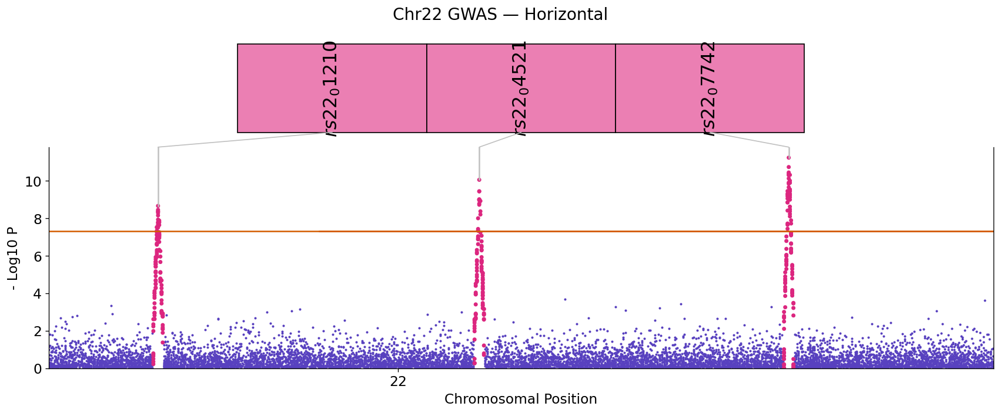
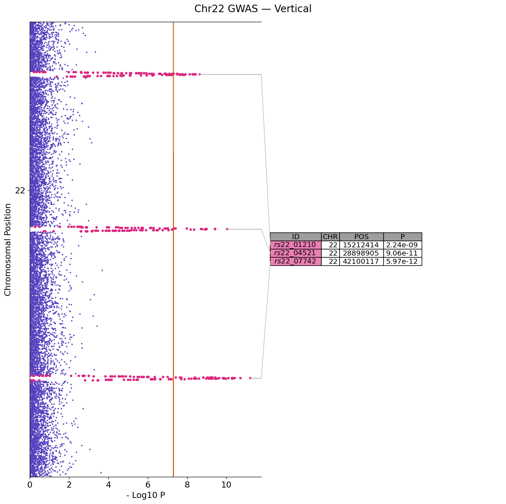
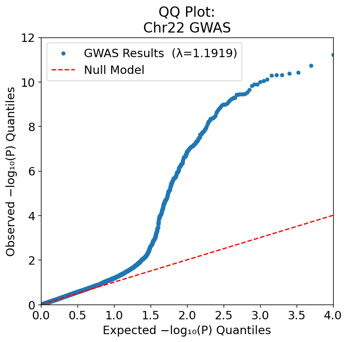
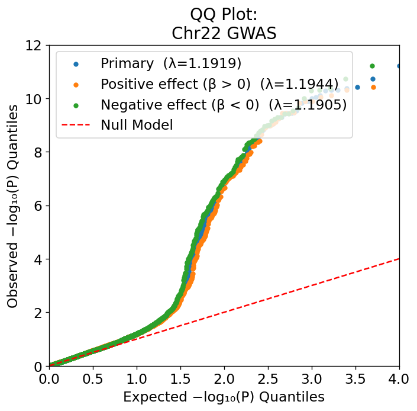

GWAS Manhattan & QQ Plots¶
Basic horizontal Manhattan¶
from neat_plots import ManhattanPlot
mp = ManhattanPlot("gwas.tsv.gz", title="BMI GWAS — European Ancestry")
mp.prepare(col_map={"CHR": "#CHROM", "BP": "POS", "SNP": "ID", "P": "P"})
mp.update_plotting_parameters(
sig=5e-8,
sug=1e-5,
merge_genes=True,
vertical=False,
)
mp.full_plot(save="manhattan_horizontal.png")

Vertical orientation¶
Swap to a vertical layout by setting vertical=True:

Without the annotation table¶
Useful for slide figures or when you want a cleaner single-panel output.
Significance thresholds¶
mp.update_plotting_parameters(
sig=5e-8, # genome-wide significance line (default)
sug=1e-5, # suggestive line
annot_thresh=5e-8, # which variants get annotated in the table
)
For ExWAS, compute a Bonferroni threshold dynamically:
mp.prepare(...)
n_tests = len(mp.df)
threshold = 0.05 / n_tests
mp.update_plotting_parameters(sig=threshold, sug=threshold * 10)
Capping the y-axis¶
For very significant hits (P < 10⁻³⁰) that visually dominate the plot, cap the axis:
Adding gene annotations¶
Supply a DataFrame with #CHROM, POS, and ID columns:
Or add them after loading:
Highlighting replicated loci¶
Pass a list of gene names to color them gold and boost their priority in the table:
Coloring by a continuous column¶
Use the signal_color_col parameter to color signal peaks by any numeric column (e.g., effect size):
QQ plot¶

The lambda GC (genomic inflation factor) is printed to stdout and annotated on the figure.
Multi-series QQ¶
Overlay subgroup P-value distributions on the same axes:
males_p = sumstats_males["P"]
females_p = sumstats_females["P"]
mp.qq_plot(
save="qq_multi.png",
additional_series={
"Males": males_p,
"Females": females_p,
},
)

Each series gets its own colour and λ GC value in the legend.
Using saved QQ CSVs
Every qq_plot(save=...) call writes a .csv alongside the PNG with the
plotted log-quantile pairs. You can collect these CSVs from multiple runs
and pass the resulting series as additional_series without re-loading the
full summary statistics.
Saving and resolution¶
mp.full_plot(save="manhattan.png", save_res=300) # 300 DPI for print
mp.full_plot(save="manhattan.pdf") # vector PDF
Saving the thinned DataFrame¶
mp.save_thinned_df("thinned.pickle") # pickle (default)
mp.save_thinned_df("thinned.csv", pickle=False) # CSV
The thinned pickle can be reloaded as a ManhattanPlot input — useful for iterating on plot styling without re-loading large files.